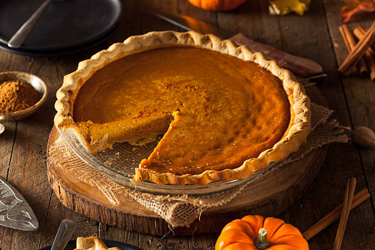

Pumpkin Pie

The Pie!
This recipe is enough filling for 2 - 9 inch pies.
Ingredients for pie filling (2 - 9 inch pies)
- 420 grams - Pure Pumpkin (1 large can of Pure Pumpkin)
- 2 - Large Eggs
- 6 - Large Egg Yolks
- 100 grams or 1/2 cup - Granulated Sugar
- 200 grams or 1 cup - Brown Sugar
- 4 Tablespoons - All-purpose Flour
- 1 teaspoon - Salt
- 2 teaspoon - Ground Cinnamon
- 2 teaspoon - Ground Ginger
- 1 teaspoon - Ground Nutmeg
- 1/4 teaspoon - Ground Cloves
- 1/4 teaspoon - Ground Black Pepper
- 600 ml - Evaporated Milk
Instructions for baking filling
- Make the Pumkin Pie Filling. In a large bowl combine 420 grams pumpkin, 2 eggs, 6 egg yolks,
100 grams granulated sugar, 200 grams brown sugar, 4 tablespoons all-purpose flour,
1 teaspoon salt, 2 teaspoons cinnamon, 2 teaspoons ginger, 1 teaspoon nutmeg, 1/4 teaspoon cloves,
1/4 teaspoon black pepper and 600 ml of evaporated milk.
- Whisk until smooth, then pour filling into the pre-baked crust.
- Preheat oven to 325 degrees fahrenheit and ake pie for 60 minutes, until filling is just set, it should look dry around the edges,
but jiggle slightly in the center.
- Let pie cool on a rack to room temperature, then refigerate or freeze.